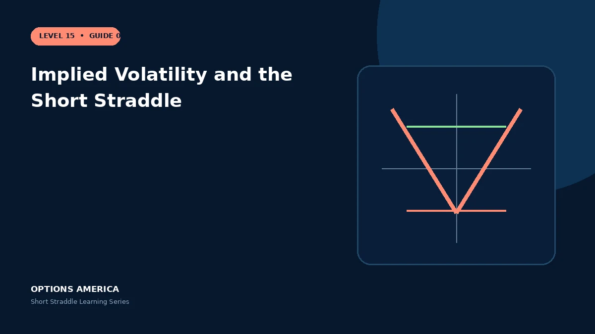

Understand negative vega, volatility crush, term structure and why high implied volatility can still become higher.
Negative vega
Both legs are short options and normally contribute negative vega. A one-point IV decline can help, while an increase raises the theoretical cost to repurchase the position.
Volatility crush
After a known event, IV may contract sharply. The contraction can help the straddle, but only if the price move and resulting intrinsic value do not consume more than the volatility gain.
Term structure
Front expirations can price event risk differently from later months. Compare the selected expiration with surrounding maturities rather than viewing IV rank as one universal number.
Volatility is dynamic
IV can expand as price approaches a breakeven or liquidity deteriorates. Stress a further volatility rise instead of assuming today's elevated level is a ceiling.
A practical example
A straddle has vega −0.22, about −$22 per IV point. A four-point IV decline implies roughly $88 of theoretical benefit before delta, gamma, theta and skew effects.
This simplified scenario focuses on expiration outcomes; live prices and risks will differ. Live option prices also reflect the underlying price, time decay, rates, dividends, liquidity and transaction costs. Greeks are theoretical estimates, not guarantees.
Build a risk-first trading plan
Before using implied volatility and the short straddle, record the underlying price, strike, expiration, total credit and contract multiplier. Calculate both expiration breakevens, then model losses beyond them rather than stopping at the profitable range. The maximum credit is visible at entry, but the largest future loss is not.
Stress at least five underlying prices, a volatility increase and decrease, and several dates. Include a gap that cannot be adjusted intraday. Review delta, gamma, theta and vega at the position and portfolio level because several neutral premium trades can become directional together.
Define a profit target, maximum tolerated loss, margin reserve, event rule and latest exit date. Use a single multi-leg order where possible and verify both legs after every fill or adjustment. This process does not eliminate risk, but it makes the decision measurable and repeatable.
After the trade, record actual movement, volatility change, slippage and the largest directional exposure. Comparing those results with the original forecast helps separate sound execution from a lucky outcome and improves future duration, strike and position-size decisions.
Frequently asked questions
Does falling IV always produce profit?
No; a large price move can dominate.
Can high IV rise further?
Yes.
What is vega?
Sensitivity to a one-point IV change, all else equal.
Continue the Short Straddle cluster
Explore related guides: Short Straddle Greeks: Delta, Gamma, Theta and Vega · How to Adjust a Short Straddle · Short Straddle Profit, Loss and Breakevens. For a structured sequence, use the free Level 15 – Short Straddle course.
Options involve risk and are not suitable for every investor. This material is educational and is not investment, tax or legal advice. Greeks are theoretical estimates, and contract terms and broker requirements can vary.